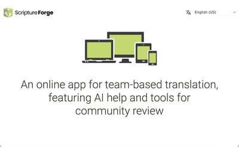
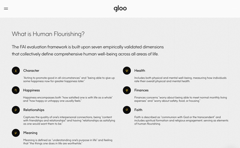
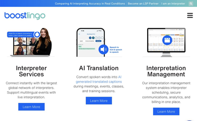
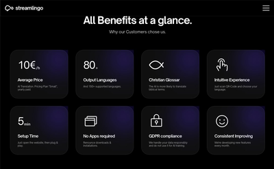
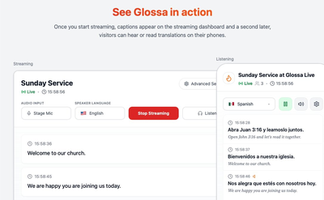
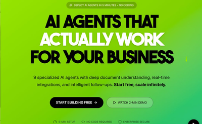

Wycliffe Vision 2025
The Goal: Every Language Translated
Every number represents a person who has a story that matters to God.
0
known spoken or signed languages around the world
wycliffe.org/vision-2025
541
Vision 2025 languages still need Bible translation to start for the first time
wycliffe.org/vision-2025
0
languages with Bible translation actively being done worldwide
ProgressBible, Jan 2026
0
languages where Wycliffe is engaged in translation projects today
Wycliffe USA


2.1 billion people served across 171 countries · Source: ProgressBible, Jan. 1, 2026
The SIL AI Ecosystem
SF
Scripture Forge
Team-based translation with AI drafting from 8,000+ translated verses
AQ
AQuA
Augmented Quality Assessment — catches errors before they reach print
FB
Faithbridge
AI Bible Q&A for translators in 80 languages via audio & text
AE
AERO
AI for oral cultures: noise removal, voice change, key term detection in audio
300+ minority language models · Two-thirds of the world’s population are oral learners · ai.sil.org

How Bible Translation Works (Seed Company)
See how AI and community work together in Bible translation.
Click to play
AI Translation in 10 Minutes
1
Connect
Soundboard to laptop. 10-minute setup. No sound booths.
2
Capture
AI captures speech → text → translates in real-time.
3
Deliver
Attendees scan QR code for captions in their language on their phone.
BL
Boostlingo
130+ languages, from $9.99
SL
Streamlingo
Church-focused live translation with powerful testimonials
GL
Glossa
$5/language/session, 100+ languages, no app required
The Curb Cut Effect: 70% of Gen Z and 53% of Millennials use closed captions regularly (Preply, 2022). Captions benefit ESL, hearing impaired, AND caption-reliant Gen Z — all in one unified service.

Live AI Church Translation Demo (Boostlingo)
Real-time translation in 130+ languages for church services.
Click to play
One Sermon → One Week of Content
Transcribe
Rev.com · $16
→
Clip
Opus Pro · 5–10 clips
→
Multiply
Claude AI · Blog, study, email
→
Schedule
ChurchSocial · $15/mo
Total time: Under 1 hour for a full week of multi-platform content.
Tool Showcase
Translation & Evangelism Tools

Free
Scripture Forge
AI-assisted team Bible translation from 8,000+ verses · ai.sil.org
Free
Apologist.ai
775k+ faith questions answered · 200 languages · 175+ countries

Enterprise
Gloo CALLM
First Christian-Aligned LLM · 30+ points above frontier models

$9.99+
Boostlingo
Live AI translation · 130+ languages · 10-min setup · QR code delivery

Varies
Streamlingo
Church-focused live translation · “Moved to tears” testimonials

$5/lang
Glossa
100+ languages · $5/session · No app needed · Browser-based
Bible Translation by the People (Seed Company)
Click to play
Tool Showcase
Sermon, Content & Admin Tools

$39/mo
AgentiveAIQ
RAG + Knowledge Graph · No-code builder · Persistent memory

$15/mo
ChurchSocial.ai
Sermon clips, graphics, AI captions · 2,000+ churches
Free trial
Opus Pro
Full sermon → 5–10 viral clips · Auto captions · TikTok/Reels

Free/Pro
Claude AI
Blog, Bible study, podcast notes, email — all from one transcript

$9.99/mo
Logos AI
Deep exegetical study · AI pulls only from YOUR vetted library
$997/yr
Ministry Automation
Pre-built AI agents · 300+ churches · Saves 15–20 hrs/week

5 Game-Changing AI Tools for Churches (Churchfront)
Click to play